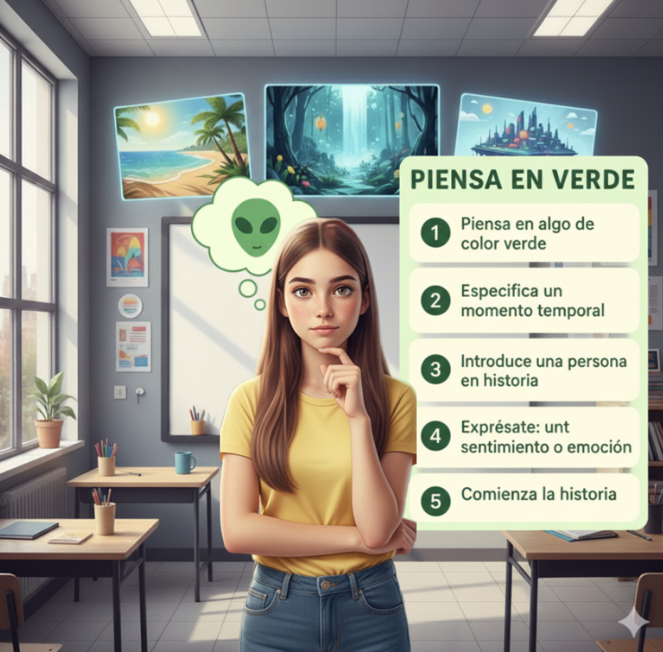
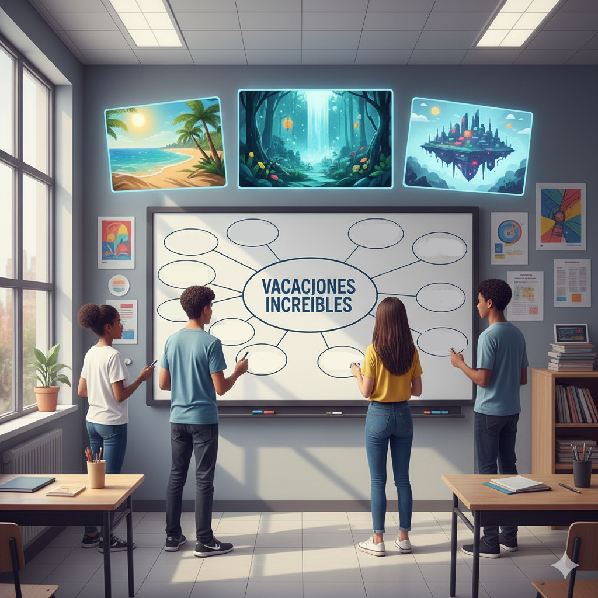

Con la píldora creativa ‘¿Somos creativos?’ buscamos que el alumnado descubriera por sí mismo que realmente puede ser creativo. Ahora, con esta actividad, proponemos dos ejercicios que les permiten empezar a crear una historia de manera rápida, evitando posibles bloqueos.
Actividad 3: Piensa en verde

Con esta actividad vamos a enseñarles cómo crear una historia rápidamente. Para ello, vas a ir saltando de un alumno a otro de forma ágil.
Le preguntas a un alumno que piense en algo de color verde.
A otro le preguntas que especifique un momento temporal; por la mañana, etc.
Otro alumno debe introducir una persona en la historia: alguien famoso o no, un abuelo o chica joven, lo que quiera el alumno
Otro alumno debe decir una sensación o emoción: está triste, siente frío, etc
El siguiente alumno ya tiene que comenzar la historia con los elementos proporcionados anteriormente. Por ejemplo si pensaron en un alienígena verde, en el invierno, un abuelo y sensación de mucho frío, el alumno podría comenzar..."El viento cortaba como cuchillas mientras el abuelo encendía la chimenea, temblando bajo su abrigo. De repente, un destello verde iluminó la nieve: un alienígena, perdido y temblando, apareció frente a ellos.."
En ese momento, pides a otro alumno que continúe la historia. Puedes darle un “ancla” para orientarle o simplemente dejar que continúe. Por ejemplo, un ancla podría ser: "el alienígena habla y te entiendes con él telepáticamente". A partir de ahí, el alumno sigue la historia según su creatividad.
Vuelves a llamar a otro alumno para que siga la historia anterior y así sucesivamente.
Este método permite crear una historia rápidamente con diferentes anclas, en este caso, algo verde, un alienígena, en invierno, etc. La historia no tiene que ser perfecta; la idea es que el alumnado tenga un punto de partida con el que trabajar de manera creativa y rápida. En menos de cinco minutos ya tendrán algo con lo que empezar que posteriormente pueden modificar y mejorar.
Actividad 4: Técnica "Question bursts”

La técnica Question Bursts es una herramienta dinámica y eficaz para generar ideas de forma rápida. Consiste en que los estudiantes, a partir de un tema o pregunta inicial, se den un tiempo limitado (por ejemplo, cinco minutos) para escribir la mayor cantidad posible de preguntas abiertas relacionadas. Por ejemplo, si el tema es "Vacaciones increíbles", los alumnos podrían plantear preguntas como: ¿Qué tipo de actividades podríamos hacer para que fueran inolvidables?, o ¿Cuál sería el clima ideal para disfrutarlas al máximo?. El objetivo principal de este ejercicio es utilizar las respuestas a estas preguntas como el punto de partida para construir una historia. Al responder a cada una de las interrogantes, los estudiantes no solo recopilan detalles sobre el escenario, los personajes, la trama y el ambiente, sino que también estructuran de manera subconsciente los elementos clave de una narrativa, logrando así un borrador inicial y un marco creativo que posteriormente pueden desarrollar y pulir en una historia más completa y detallada.
Imágenes Gemini 2025